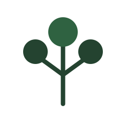
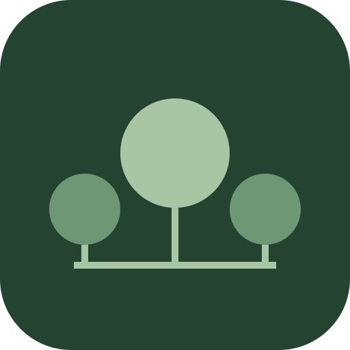

직접 해온 경험을, 함께 해내는 배움으로
브랜드 소개와 교육·강연 자료의 첫 문장에 사용합니다.
00 / OUR BRAND
SotoLAB은 Sunstar가 운영하는 교육·멘토링 브랜드입니다. 연구와 개발 현장에서 얻은 경험을 강연, 실습, 기업 멘토링으로 연결합니다.
01 / IDENTITY
영문은 SotoLAB, 국문은 소토랩으로 표기합니다. 기업 멘토링 서비스는 ‘소토랩 멘토링’으로 소개합니다.
교육자료, 제안서, 홈페이지 등 밝은 배경에 사용하는 기본 워드마크입니다.
검정 배경에서 LAB과 가운데 원은 밝은 녹색(#A8C5A4), 양쪽 원은 짙은 녹색(#6D9775)으로 구분합니다.

기본 로고의 나무처럼 수평 가지에 세 개의 원을 수직으로 연결합니다. 가운데 원은 크게, 양쪽 원은 작게 유지하며 첫 소개에는 SotoLAB 이름을 함께 표시합니다.

프로필과 앱 바로가기에 사용하는 둥근 모서리 아이콘입니다. PNG는 512 × 512px이며, 모서리 반경은 104px로 바깥 영역은 투명합니다.
로고 전체 높이를 H로 보고, 사방에 최소 ¼ H의 보호 여백을 둡니다. 다른 글자나 협력기관 로고가 이 영역에 들어오지 않도록 합니다. 독립 심벌에도 같은 기준을 적용합니다.
워드마크 최소 너비는 160px, 인쇄는 35mm를 권장합니다. 그보다 작은 공간에는 최소 24px 높이의 심벌을 사용합니다.
가로세로 비율, 글자 간격, 나무의 위치를 바꾸지 않습니다. 임의의 색상 변경, 그림자, 외곽선, 일부 잘라 쓰기는 피합니다.
밝은 배경에는 Primary, 어두운 배경에는 Inverse를 사용합니다. Symbol은 밝은 단색 배경에, App icon은 플랫폼의 정사각형 아이콘 영역에 사용합니다.
02 / COLORS
짙은 녹색이 브랜드를 잡고, 밝은 바탕과 검정이 정보의 대비를 만듭니다. 연한 녹색은 어두운 배경의 보조 강조에 사용합니다.
색상을 선택하면 HEX 코드가 복사됩니다.
기본 로고 배경은 흰색(#FFFFFF)과 검정(#000000)입니다. 작은 본문은 Ink 또는 Forest를 사용하고, Sage는 밝은 배경의 본문색으로 쓰지 않습니다.
03 / TYPOGRAPHY
영문 본문은 Inter, 영문 라벨은 Space Grotesk를 사용합니다. 국문은 Noto Sans KR을 우선하며, 설치되지 않은 환경에서는 시스템 고딕체로 표시합니다. 로고 글자는 제공된 이미지 그대로 사용합니다.
이해하고, 만들고,
함께 나눕니다
Experience into learning.
700 / 제목
배우는 사람이 먼저 보이는 문장
500 / 강조
핵심 단어와 명확한 행동
400 / 본문
읽기 편한 크기와 충분한 행간
| 역할 | 데스크톱 | 모바일 | 행간 |
|---|---|---|---|
| 메인 제목 | 56px | 36px | 1.3 |
| 섹션 제목 | 36px | 28px | 1.4 |
| 본문 | 18px | 17px | 1.8 |
| 보조 안내 | 15px | 14px | 1.7 |
자간은 0을 기준으로 하고, 짧은 제목과 자연스러운 줄바꿈을 사용합니다.
04 / VOICE & PHILOSOPHY
브랜드 소개와 교육·강연 자료의 첫 문장에 사용합니다.
기업 멘토링 제안서와 개발팀 성장 프로그램에 사용합니다.
소프트웨어 윤리와 친절한 마음을 바탕으로, 배우는 사람이 다음 사람의 멘토가 되는 선순환을 지향합니다. 사람들의 삶의 질을 높이는 소프트웨어의 유토피아, 소토피아(Sotopia)를 추구합니다.
무엇을 배우고 직접 만들어 보는지 먼저 설명합니다. 운영한 교육 사례와 앞으로 제안하는 프로그램을 구분하고, 교육 효과를 과장하거나 확인되지 않은 수치를 쓰지 않습니다.
05 / IN PRACTICE
이해 → 실습 → 검증 → 공유
장성균 공학박사 · Sunstar주간 미션 · 주 1회 방문 피드백 · 온라인 지원
교육·멘토링 제안서두 로고의 시각적 크기를 맞추고 각각의 보호 여백을 확보합니다. ‘교육 운영’, ‘주최’, ‘협력’ 등 실제 역할을 명시합니다.
교육 브랜드는 SotoLAB, 운영 회사는 Sunstar로 구분합니다. 자료 하단에는 ‘운영: 썬스타 · © 2026 Sunstar’를 사용합니다.
06 / DOWNLOADS
Primary, Inverse, Symbol, App icon과 색상·서체 토큰, 교육자료 표지 템플릿, 오프라인 가이드를 제공합니다.
Primary와 Inverse는 배경이 포함된 PNG입니다. Symbol은 투명 SVG·PNG, App icon은 배경이 포함된 SVG·PNG로 제공합니다.
SotoLAB을 소개하는 교육·보도·협력 자료에 사용하세요. 로고를 변형하거나 협력·인증 관계를 임의로 표시하지 않습니다.